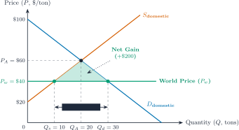
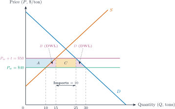
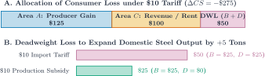

14 Chapter 14: International Trade, Comparative Advantage, and Protectionism
This chapter applies supply, demand, and welfare economics to international trade. Using the small open economy model, we trace how opening to trade creates net social surplus gains alongside sharp distributional splits between domestic consumers and producers, analyze the welfare transfers and deadweight losses of tariffs and import quotas, and evaluate classic arguments for trade protection.
Whenever a government proposes a tariff on imported steel, two groups immediately take opposite sides. Domestic steel mills and factory workers argue that tariffs protect domestic manufacturing jobs and sustain vital industrial capacity. Meanwhile, downstream manufacturers—automakers, appliance makers, and construction firms—along with everyday households warn that tariffs act as a hidden tax that raises the cost of cars, buildings, and consumer goods. How can a single border tax feel like an economic lifeline to one group and a costly burden to millions of others? Throughout this chapter, we use consumer surplus, producer surplus, and deadweight loss to account for every dollar of gains, transfers, and permanent economic waste under free trade and protectionism.
14.1 Comparative Advantage and Free Trade Welfare Mechanics
Conceptual Introduction
In Chapter 2, we used the production possibilities frontier (PPF) to show that when countries specialize according to comparative advantage—producing goods at a lower domestic opportunity cost—and trade, total consumption can expand beyond domestic production limits. Now we bring comparative advantage into a single-market supply-and-demand framework to pinpoint who wins and who loses inside a country when it opens its borders to international trade. Throughout our core graphical and algebraic analysis, we assume a small open economy (the country is a price-taker in the world market and cannot alter the global price), linear domestic supply and demand curves, competitive markets, and zero transportation costs (ceteris paribus).
To determine whether a small open economy becomes an importer or an exporter of a specific good, compare its autarky (no-trade) domestic equilibrium price (\(P_A\)) against the prevailing world price (\(P_w\)):
- Importing Country (\(P_w < P_A\)): Foreign producers have a comparative advantage and can supply the good at a lower opportunity cost than domestic firms. Under free trade, the domestic price drops from \(P_A\) to \(P_w\). Domestic consumers benefit—buying more at a lower price and capturing a large expansion in Consumer Surplus (\(CS\)). Domestic producers are harmed—cutting production and losing Producer Surplus (\(PS\)). Crucially, the gain to consumers strictly exceeds the loss to domestic producers, creating a net gain in Total Social Surplus (\(TS = CS + PS\)).
- Exporting Country (\(P_w > P_A\)): Domestic producers have a comparative advantage and can sell abroad at a higher world price. Under free trade, the domestic price rises from \(P_A\) to \(P_w\). Domestic producers expand output and capture a gain in Producer Surplus that strictly exceeds the loss in Consumer Surplus suffered by domestic buyers—once again generating a positive net gain in Total Social Surplus.
This sharp distributional split explains why trade policy is perpetually contentious in real-world markets such as global apparel, consumer electronics, and agricultural exports. When households buy smartphones, laptops, and clothing sourced from specialized global supply chains at lower world prices, the gains from free trade are spread thinly across millions of consumers (for example, saving \(\$30\) on a pair of shoes). By contrast, the losses from import competition are concentrated among specific domestic factories and workers, giving import-competing industries a strong incentive to lobby for trade barriers even when free trade expands total national surplus.
A common misconception is that exports are always good'' for an economy while imports arebad’’ because imports reduce domestic producer surplus in the competing industry. In welfare economics, both exporting and importing raise Total Social Surplus. When a country imports at \(P_w < P_A\), domestic consumers gain more surplus than domestic producers lose (\(\Delta CS + \Delta PS = \Delta TS > 0\)), and domestic labor and capital are freed to move toward sectors where the country holds a comparative advantage.
Visual Representation
Figure 1 illustrates an importing market where the world price \(P_w = \$40\) lies below the autarky price \(P_A = \$60\), expanding Total Social Surplus by the shaded teal triangle. Table~\(\ref{tab:free_trade_summary}\) summarizes how both importing and exporting reshape domestic prices and surplus.

Mathematical Foundation (Algebra-First)
Assuming linear domestic demand and supply in a small open economy, trade volumes and net social surplus gains are computed directly using triangle areas:
\[ \text{Importing } (P_w < P_A): \quad \text{Imports} = Q_d(P_w) - Q_s(P_w), \qquad \Delta TS_{\text{import}} = \frac{1}{2} \times \text{Imports} \times (P_A - P_w) \]
\[ \text{Exporting } (P_w > P_A): \quad \text{Exports} = Q_s(P_w) - Q_d(P_w), \qquad \Delta TS_{\text{export}} = \frac{1}{2} \times \text{Exports} \times (P_w - P_A) \]
In a small open economy’s market for steel, domestic inverse demand is \(P = 100 - 2Q_d\) and domestic inverse supply is \(P = 20 + 2Q_s\), where \(P\) is measured in dollars per ton and \(Q\) in tons.
- Find the autarky equilibrium price \(P_A\), quantity \(Q_A\), and autarky surplus (\(CS_A\), \(PS_A\), \(TS_A\)).
- Suppose the country opens to free trade at a world price of \(P_w = \$40\) per ton. Calculate domestic quantity supplied, domestic quantity demanded, import volume, \(\Delta CS\), \(\Delta PS\), and the net gain in Total Social Surplus (\(\Delta TS\)).
- Exporting Check: What would happen to trade volume and \(\Delta TS\) if the world price were instead \(P_w = \$80\) per ton?
Step-by-Step Solution:
- Autarky Equilibrium (\(P_A, Q_A\)) and Autarky Surplus: Set inverse demand equal to inverse supply (\(Q_d = Q_s = Q_A\)):
\[ 100 - 2Q_A = 20 + 2Q_A \implies 80 = 4Q_A \implies Q_A = \mathbf{20\text{ tons}}, \qquad P_A = 100 - 2(20) = \mathbf{\$60} \]
Using the vertical intercepts (\(\$100\) for demand and \(\$20\) for supply):
\[ CS_A = \frac{1}{2}(20)(\$100 - \$60) = \$400, \qquad PS_A = \frac{1}{2}(20)(\$60 - \$20) = \$400, \qquad TS_A = \mathbf{\$800} \]
- Importing Equilibrium at \(P_w = \$40\):
\[ 40 = 20 + 2Q_s \implies 2Q_s = 20 \implies Q_s = \mathbf{10\text{ tons produced domestically}} \]
\[ 40 = 100 - 2Q_d \implies 2Q_d = 60 \implies Q_d = \mathbf{30\text{ tons consumed domestically}} \]
\[ \text{Imports} = Q_d - Q_s = 30 - 10 = \mathbf{20\text{ tons}} \]
Compute free-trade Consumer and Producer Surplus:
\[ CS_{\text{trade}} = \frac{1}{2}(30)(\$100 - \$40) = \$900 \implies \Delta CS = \$900 - \$400 = \mathbf{+\$500} \]
\[ PS_{\text{trade}} = \frac{1}{2}(10)(\$40 - \$20) = \$100 \implies \Delta PS = \$100 - \$400 = \mathbf{-\$300} \]
Verify Net Social Surplus Gain two ways:
\[ \Delta TS = \Delta CS + \Delta PS = +\$500 - \$300 = \mathbf{+\$200} \]
\[ \Delta TS = \frac{1}{2} \times \text{Imports} \times (P_A - P_w) = \frac{1}{2} \times 20 \times (\$60 - \$40) = 10 \times \$20 = \mathbf{+\$200} \]
- Exporting Check at \(P_w = \$80\): Since \(P_w = \$80 > P_A = \$60\), the country becomes an exporter:
\[ 80 = 20 + 2Q_s \implies Q_s = 30\text{ tons}, \qquad 80 = 100 - 2Q_d \implies Q_d = 10\text{ tons} \]
\[ \text{Exports} = Q_s - Q_d = 30 - 10 = \mathbf{20\text{ tons}} \]
Here \(CS_{\text{exp}} = \frac{1}{2}(10)(100 - 80) = \$100\) (\(\Delta CS = -\$300\)) and \(PS_{\text{exp}} = \frac{1}{2}(30)(80 - 20) = \$900\) (\(\Delta PS = +\$500\)), yielding the exact same net gain \(\Delta TS = \frac{1}{2}(20)(\$80 - \$60) = \mathbf{+\$200}\).
Conclusion: Opening to free trade raises national social welfare by \(+\$200\) whether the country imports at \(\$40\) or exports at \(\$80\), though the domestic winners and losers flip between the two cases.
Note for Economics Majors and Quantitative Students: For general (possibly nonlinear) domestic demand \(Q_d(P)\) and supply \(Q_s(P)\), welfare changes under importing (\(P_w < P_A\)) are exact definite integrals with respect to price:
\[ \Delta CS = \int_{P_w}^{P_A} Q_d(P)\,dP, \qquad \Delta PS = -\int_{P_w}^{P_A} Q_s(P)\,dP, \qquad \Delta TS = \int_{P_w}^{P_A} \bigl[Q_d(P) - Q_s(P)\bigr]\,dP. \]
In our steel market, inverting the linear curves gives \(Q_d(P) = 50 - 0.5P\) and \(Q_s(P) = 0.5P - 10\), so import demand is \(M(P) = Q_d(P) - Q_s(P) = 60 - P\). Integrating from \(P_w = 40\) to \(P_A = 60\) confirms our geometric triangle:
\[ \Delta TS = \int_{40}^{60} (60 - P)\,dP = \left[60P - \frac{1}{2}P^2\right]_{40}^{60} = (3{,}600 - 1{,}800) - (2{,}400 - 800) = 1{,}800 - 1{,}600 = +\$200. \]
14.2 Tariffs, Import Quotas, and Deadweight Loss
Conceptual Introduction
To shield domestic industries from foreign competition, governments frequently impose trade barriers—most commonly a tariff (a per-unit or percentage tax levied on imported goods) or an import quota (a legal cap on the physical quantity of a good allowed to enter the country). In our small open economy benchmark, foreign supply at the world price \(P_w\) is perfectly elastic, so imposing a per-unit tariff \(t\) raises the domestic market price by the full amount of the tariff, from \(P_w\) to \(P_t = P_w + t\).
This price increase triggers four distinct welfare effects relative to free trade, traditionally labeled Areas \(A, B, C,\) and \(D\):
- Consumer Surplus Shrinks by \(-(A + B + C + D)\): Domestic buyers pay a higher price (\(P_w + t\)) and cut consumption from \(Q_{d1}\) to \(Q_{d2}\).
- Producer Surplus Expands by \(+A\): Protected by the higher domestic price, domestic producers expand output from \(Q_{s1}\) to \(Q_{s2}\). Area \(A\) is a direct transfer from domestic consumers to domestic firms.
- Government Tariff Revenue Equals \(+C = t \times (Q_{d2} - Q_{s2})\): The domestic treasury collects \(t\) dollars on every imported unit that still crosses the border.
- Deadweight Loss Equals \(-(B + D)\): Area \(B\) represents production inefficiency (using higher-cost domestic resources to produce units that could have been imported cheaply at \(P_w\)), while Area \(D\) represents consumption inefficiency (mutually beneficial trades lost when buyers whose willingness to pay exceeds \(P_w\) are priced out at \(P_w + t\)).
An import quota restricting imports to the exact same volume (\(Q_{d2} - Q_{s2}\)) pushes the domestic price to the same level \(P_w + t\) and causes the exact same deadweight loss \((B + D)\)—with one critical difference. Instead of generating domestic tax revenue, Area \(C\) becomes quota rents captured by whoever holds the valuable import licenses. If licenses are given away to foreign exporters (as under a voluntary export restraint), Area \(C\) flows abroad, increasing the importing country’s net welfare loss from \(B + D\) to \(B + C + D\). In practice, when tariffs or quotas raise the domestic price of intermediate inputs such as steel or solar panels, domestic producers capture Area \(A\), while downstream manufacturers—such as automakers, construction firms, and rooftop solar installers—face higher input costs that squeeze margins and raise retail prices.
Unlike a domestic excise tax (which creates a single Harberger deadweight loss triangle), an import tariff creates two separate deadweight loss triangles. Triangle \(B\) wastes productive resources by pulling higher-cost domestic suppliers into production above \(P_w\), while Triangle \(D\) destroys consumer surplus by pricing out domestic buyers who value the good above \(P_w\) but below \(P_w + t\).
Visual Representation
Figure 2 illustrates the four welfare regions (\(A, B, C, D\)) created when a per-unit tariff of \(t = \$10\) raises the domestic steel price from \(P_w = \$40\) to \(P_w + t = \$50\). Table~\(\ref{tab:tariff_vs_quota}\) compares the welfare incidence of a tariff against an equivalent import quota.

Mathematical Foundation (Algebra-First)
Under a per-unit tariff \(t\) raising the domestic price from \(P_w\) to \(P_t = P_w + t\):
\[ \text{Area } A = \frac{Q_{s1} + Q_{s2}}{2} \times t, \qquad \text{Tariff Revenue } (C) = t \times (Q_{d2} - Q_{s2}) \]
\[ DWL = B + D = \frac{1}{2} t (Q_{s2} - Q_{s1}) + \frac{1}{2} t (Q_{d1} - Q_{d2}), \qquad \Delta CS = -(A + B + C + D) \]
Continuing our steel market (\(P = 100 - 2Q_d\), \(P = 20 + 2Q_s\), \(P_w = \$40\)), suppose the government imposes a per-unit tariff of \(t = \$10\) per ton, raising the domestic price to \(P_t = \$50\).
- Compute post-tariff domestic supply (\(Q_{s2}\)), domestic demand (\(Q_{d2}\)), and post-tariff imports.
- Calculate Areas \(A, B, C,\) and \(D\), total Consumer Surplus loss (\(\Delta CS\)), and net Deadweight Loss (\(DWL\)).
- How does net domestic welfare change if the government replaces the tariff with a \(10\)-ton import quota and allocates import licenses free of charge to foreign exporters?
Step-by-Step Solution:
- Post-Tariff Quantities at \(P_t = \$50\):
\[ 50 = 20 + 2Q_{s2} \implies 2Q_{s2} = 30 \implies Q_{s2} = \mathbf{15\text{ tons}} \]
\[ 50 = 100 - 2Q_{d2} \implies 2Q_{d2} = 50 \implies Q_{d2} = \mathbf{25\text{ tons}} \]
Post-tariff imports fall from \(20\) tons down to \(25 - 15 = \mathbf{10\text{ tons}}\).
Compute Areas \(A, B, C, D\) and Verify \(\Delta CS\):
Producer Surplus Gain (Trapezoid \(A\)):
\[ \text{Area } A = \frac{Q_{s1} + Q_{s2}}{2} \times t = \frac{10 + 15}{2} \times \$10 = 12.5 \times \$10 = \mathbf{\$125} \]
- Government Tariff Revenue (Rectangle \(C\)):
\[ \text{Area } C = t \times \text{Imports}_{\text{tariff}} = \$10 \times 10 = \mathbf{\$100} \]
- Deadweight Loss Triangles (\(B\) and \(D\)):
\[ \text{Area } B = \frac{1}{2}(15 - 10)(\$10) = \mathbf{\$25}, \qquad \text{Area } D = \frac{1}{2}(30 - 25)(\$10) = \mathbf{\$25} \]
\[ DWL = B + D = \$25 + \$25 = \mathbf{\$50} \]
- Cross-Check Consumer Surplus Loss: Summing all four areas gives \(\Delta CS = -(\$125 + \$25 + \$100 + \$25) = \mathbf{-\$275}\). Checking directly against the free-trade consumer surplus (\(CS_{\text{trade}} = \$900\)):
\[ CS_{\text{tariff}} = \frac{1}{2}(25)(\$100 - \$50) = \$625 \implies \Delta CS = \$625 - \$900 = \mathbf{-\$275} \quad \checkmark \]
- Equivalent 10-Ton Quota with Foreign License Holders: Capping imports at \(10\) tons holds the domestic price at \(\$50\) and generates the same \(\Delta CS = -\$275\) and \(\Delta PS = +\$125\). However, Area \(C = \$100\) is now captured by foreign exporters as quota rents instead of the domestic treasury, widening the domestic nation’s net welfare loss from \(\$50\) to \(B + C + D = \mathbf{\$150}\).
Conclusion: Under the \(\$10\) tariff, domestic consumers lose \(\$275\): \(\$125\) transfers to domestic producers, \(\$100\) goes to government revenue, and \(\$50\) is permanently destroyed as deadweight loss.
Note for Economics Majors and Quantitative Students: While a tariff always lowers national welfare for a small price-taking country (\(P_w\) fixed), a large country whose import demand lowers the world price by \(\Delta P_w = P_{w0} - P_{w1} > 0\) gains a terms-of-trade improvement of \(\Delta P_w \times M_t\). Net national welfare changes by \(\Delta W = (\Delta P_w \times M_t) - (B + D)\). Maximizing national welfare by equating domestic marginal benefit \(P(M) = P_w(1 + \tau)\) to the marginal import expenditure \(\frac{d}{dM}[P_w(M)M] = P_w\bigl(1 + \frac{1}{\varepsilon_s^*}\bigr)\) yields the optimal ad valorem tariff rate:
\[ \tau^* = \frac{1}{\varepsilon_s^*}, \qquad \text{where } \varepsilon_s^* = \frac{dM}{dP_w}\frac{P_w}{M} > 0 \text{ is the foreign export supply elasticity.} \]
For a small open economy, \(\varepsilon_s^* \to \infty\), confirming \(\tau^* = 0\). Even for a large country, this formula assumes foreign trading partners do not retaliate with counter-tariffs—which in practice typically leaves both nations worse off.
14.3 Arguments for Protectionism and Trade Policy Evaluation
Conceptual Introduction
If tariffs and import quotas strictly reduce Total Social Surplus in a small open economy, why do governments routinely enact them? Beyond lobbying by concentrated producer groups, policymakers cite four primary arguments for trade protection, each carrying important economic trade-offs:
- National Security: Preserving domestic production capacity in defense-critical sectors (such as specialty steel, semiconductors, or aerospace) reduces vulnerability during geopolitical disruptions. Economists caution, however, that industries routinely stretch the ``national security’’ label to secure protection even when stockpiling or allied sourcing is far cheaper.
- Infant Industry: Temporarily shielding a young domestic industry may help firms achieve economies of scale and learning-by-doing until they can compete globally. In practice, governments struggle to pick future winners, and ``temporary’’ tariffs often become politically entrenched long after the industry matures.
- Anti-Dumping (Unfair Competition): Dumping occurs when a foreign firm exports a product below its cost of production or below its home-market price. While tariffs can deter predatory pricing designed to drive domestic rivals out of business, anti-dumping complaints are frequently filed against foreign competitors that are simply more efficient.
- Protecting Domestic Jobs and Wages: Import barriers can save visible jobs inside a protected factory, but they do not increase net economy-wide employment. Higher prices for protected inputs reduce demand and employment in downstream and export-oriented industries, often resulting in a very high consumer cost per job saved.
To avoid destructive tit-for-tat tariff wars—a classic Prisoner’s Dilemma where unilateral protection leaves every trading partner worse off—nations participate in multilateral institutions such as the World Trade Organization (WTO) and regional free trade agreements (such as the USMCA). Economists also distinguish between whether to help displaced workers and how to help them: targeted domestic policies (such as worker retraining, relocation assistance, or direct production subsidies for genuinely strategic goods) avoid distorting consumer prices and impose far lower deadweight loss than broad border tariffs.
Visual Representation
Figure 3 decomposes the \(\$275\) Consumer Surplus loss from our \(\$10\) steel tariff and contrasts its \(\$50\) deadweight loss against a \(\$10\) per-ton domestic production subsidy that achieves the exact same \(+5\)-ton increase in domestic steel output while cutting deadweight loss in half.

Mathematical Foundation (Algebra-First)
To evaluate the economic efficiency of job-protection arguments, economists divide the consumer burden and deadweight loss of a trade barrier by the number of domestic jobs protected (\(\Delta L_{\text{protected}}\)):
\[ \text{Consumer Cost per Job Protected} = \frac{|\Delta CS|}{\Delta L_{\text{protected}}}, \qquad \text{Deadweight Loss per Job Protected} = \frac{B + D}{\Delta L_{\text{protected}}} \]
Suppose our steel market in Work It Out 14.2 is scaled to thousands of tons (\(P\) remains in dollars per ton), so the \(\$10\) per-unit tariff expands domestic production by \(\Delta Q_s = 5{,}000\) tons, reduces Consumer Surplus by \(|\Delta CS| = \$275{,}000\), raises Producer Surplus by \(\$125{,}000\), generates \(\$100{,}000\) in tariff revenue, and creates \(\$50{,}000\) in deadweight loss. Assume, as a hypothetical illustration, that producing those extra \(5{,}000\) tons preserves \(\Delta L_{\text{protected}} = 5\) domestic steelworker jobs.
- Calculate the consumer cost per job protected.
- Calculate the producer surplus gain per job protected and the pure deadweight loss per job protected.
- Interpret why consumers pay substantially more per job than domestic steel producers receive.
Step-by-Step Solution:
- Consumer Cost per Job Protected:
\[ \frac{|\Delta CS|}{\Delta L_{\text{protected}}} = \frac{\$275{,}000}{5\text{ jobs}} = \mathbf{\$55{,}000\text{ per job}} \]
- Producer Surplus Gain and Deadweight Loss per Job Protected:
\[ \text{Producer Surplus Gain per Job} = \frac{\$125{,}000}{5} = \mathbf{\$25{,}000\text{ per job}} \]
\[ \text{Deadweight Loss per Job} = \frac{\$50{,}000}{5} = \mathbf{\$10{,}000\text{ per job}} \]
- Economic Interpretation: Consumers bear \(\$55{,}000\) in higher steel costs for every protected job, yet only \(\$25{,}000\) reaches domestic steel producers as surplus (while \(\$20{,}000\) goes to tariff revenue and \(\$10{,}000\) vanishes into deadweight loss). Moreover, if higher steel prices eliminate jobs in downstream industries such as auto manufacturing, the net domestic employment gain is even smaller.
Note for Economics Majors and Quantitative Students: Suppose policymakers seek to raise domestic steel production from \(Q_{s1} = 10\) to \(Q_{s2} = 15\) tons for national security. Instead of a \(\$10\) tariff, consider a direct domestic production subsidy of \(s = \$10\) per ton. Domestic firms receive \(P_w + s = \$50\) and produce \(15\) tons (\(\Delta PS = +\$125\)), while domestic consumers still pay \(P_w = \$40\) and buy \(30\) tons (\(\Delta CS = \$0\)). Government subsidy expenditure is \(s \times Q_{s2} = \$10 \times 15 = \$150\), so net social surplus changes by:
\[ \Delta TS_{\text{subsidy}} = \Delta CS + \Delta PS - s Q_{s2} = 0 + \$125 - \$150 = -\$25 = -\text{Area } B. \]
More generally, differentiating total surplus with respect to a tariff \(t\) versus a production subsidy \(s\) shows that marginal deadweight loss satisfies:
\[ \frac{d(DWL_{\text{tariff}})}{dt} = t\bigl[Q_s'(P_w + t) - Q_d'(P_w + t)\bigr] \;>\; s\,Q_s'(P_w + s) = \frac{d(DWL_{\text{subsidy}})}{ds} \quad (\text{at } t = s > 0, \text{ since } Q_d' < 0). \]
Because the subsidy directly targets the production goal without raising the consumer price, it eliminates consumption distortion Triangle \(D\) and strictly dominates the tariff in welfare terms.
Returning to the debate between domestic steelworkers and automakers, our surplus framework reveals why trade disputes are so hard to resolve politically. A steel tariff delivers immediate, visible producer gains (Area \(A\)) to domestic mills and their workforce, while spreading a larger consumer loss (\(A + B + C + D\)) across millions of households and downstream manufacturers. Because society as a whole loses deadweight loss (\(B + D\))—and loses even more (\(B + C + D\)) if an import quota hands quota rents to foreign exporters—economists generally recommend keeping trade open while supporting displaced workers directly through retraining and adjustment policies rather than restricting imports.